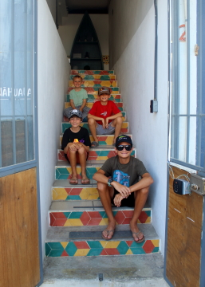
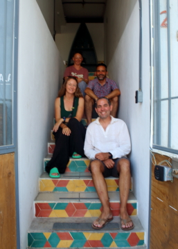

La Paz: 24 June 2023
Route
| Location | Latitude | Longitude |
|---|---|---|
| Caleta Lobos | 24.301 N | 110.336 W |
| La Paz | 24.214 N | 110.299 W |
Journal
Another start by 07:00, Grieg has to be in her slip by 10:00. We first sail toward Isla Espiritu Santo, we want to get into the channel between the island and the main-land so we can release some "messages in a bottle." The boys have each placed a message in a wine bottle, which we then re-cork and seal. We are hoping they journey on the sea before washing ashore to be found. We have included an email address in the note so whomever finds them can contact us. Once we release the bottles, we head to CostaBaja Marina, replenish Grieg's fuel, and return to the slip.
We pack and clean, Zarko heads off to pick-up the Urvan, which is typically delayed, giving us ample time to unload and relax in the marina. Once he returns, we, again, pile our gear and crew into the van and head to Nahuala Home. We have opted for the same accomodations on return, knowing the familairity will ease our reintegration to society. After settling gear, claiming beds, showering, and having a few beats of relaxing, Michael, Amy, Asher, Tobias, and Aleks go for a walk in La Paz. We stroll the Malecon, visit the scuba shop to retrieve my knife, which I left inside the pocket of the rented BCD, and enjoy a shaved ice in the sweltering heat. For a moment, a long moment, it feels like we live here, in our hearts and souls we now do. We begin to make plans to return in December.
In the evening, a quick round of souvenir shopping, a final swim at the beach, and another sumptuous meal at La Peregrina. The night closes early, we are all tired after this amazing adventure. We sleep well, with sadness, that tomorrow we depart, dreaming of a December return: 1,000 nautical miles from Long Beach to La Paz...
 